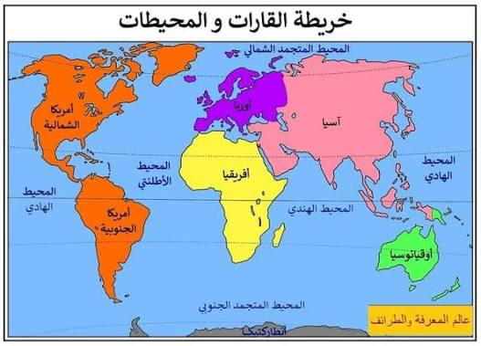
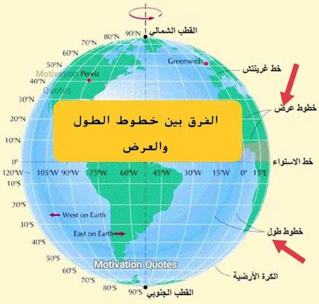
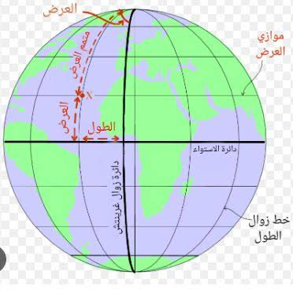
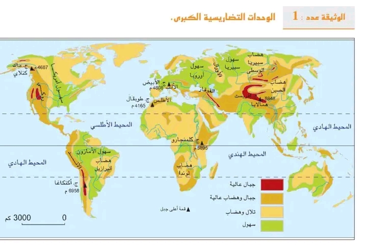

القارات والمحيطات والوحدات التضارسيّة الكبرى
مقدمة
تتكوّن الكرة الأرضيّة التي نعيش عليها من قسمين كبيرين: قسم يابس تشغله القارات، وقسم مائي تشغله المحيطات والبحار. ولمعرفة موقع كلّ مكان على سطح الأرض، اعتمد العلماء على خطوط وهميّة هي خطوط الطول وخطوط العرض. كما تتوزّع على سطح الكرة الأرضيّة وحدات تضاريسيّة كبرى من جبال وسهول وهضاب.
ما هي القارات والمحيطات؟ وكيف نحدّد الأمكنة على الكرة الأرضيّة؟ وما هي الوحدات التضاريسيّة الكبرى؟
I القارات والمحيطات
تنقسم الكرة الأرضيّة إلى قسمين: القسم اليابس والقسم المائي.
أ. القسم اليابس
يمثّل هذا القسم ¼ مساحة الكرّة الأرضيّة، ويشمل 5 قارات:
- القارة الإفريقيّة.
- القارة الأوروبيّة.
- القارة الآسيويّة.
- القارة الأمريكيّة.
- القارة الأنتركتيكيّة.
ب. القسم المائي
وهو يمثّل ¾ مساحة الكرّة الأرضيّة، ويتكوّن من المحيطات والبحار.
1. المحيطات
وهي خمسة محيطات:
- المحيط الهندي.
- المحيط الهادي.
- المحيط الأطلسي.
- المحيط المتجمّد.
- المحيط الاركتيكي.
2. البحار
والتي من بينها:
- البحر الأبيض المتوسّط.
- البحر الميّت.
- البحر الأحمر.
- بحر العرب.
- البحر الأسود.
II خطوط الطول وخطوط العرض
لتحديد الأمكنة على الكرّة الأرضيّة، اعتمد العلماء على خطوط وهميّة تُعرف بخطوط الطول وخطوط العرض.
1. خطوط الطول
عددها 360 خطًّا، يتوسّطها خطّ غرينيتش.
2. خطوط العرض
عددها 180 خطًّا، يتوسّطها خطّ الاستواء، وهو الخطّ الذي يُقسّم الكرّة الأرضيّة إلى نصفين متساويين:
- نصف شمالي: يشمل الجزء الأكبر من اليابسة.
- نصف جنوبي: يغطّي أغلبه الماء.
ويمكننا تلخيص ذلك في الجدول التالي:
| نوع الخطوط | العدد | الخطّ المتوسّط |
|---|---|---|
| خطوط الطول | 360 خطًّا | خطّ غرينيتش |
| خطوط العرض | 180 خطًّا | خطّ الاستواء |
III الوحدات التضاريسيّة الكبرى
تغلب على المشهد التضاريسي ثلاث وحدات تضاريسيّة هامّة، وهي: السلاسل الجبليّة، والسهول، والهضاب.
أ. السلاسل الجبليّة
مثل:
- جبال الأطلس وطوبقال بالمغرب.
- جبال الروكي وجبال الآلند بالقارة الأمريكيّة.
- جبال الألب بأوروبّا.
ب. السهول
من أهمّها:
- سهول الأمازون وسهول أمريكا بالقارة الأمريكيّة.
- سهول أوروبّا بالقارة الأوروبيّة.
- سهول سيبيريا بالقارة الآسيويّة.
ج. الهضاب
من أهمّها:
- هضاب الصين بالقارة الآسيويّة.
- هضاب لموند بالقارة الإفريقيّة.
- هضاب البرازيل بالقارة الأمريكيّة.
ويمكننا تلخيص الوحدات التضاريسيّة الكبرى في الجدول التالي:
| الوحدة التضاريسيّة | أمثلة |
|---|---|
| السلاسل الجبليّة | جبال الأطلس وطوبقال، جبال الروكي والآلند، جبال الألب |
| السهول | سهول الأمازون وأمريكا، سهول أوروبّا، سهول سيبيريا |
| الهضاب | هضاب الصين، هضاب لموند، هضاب البرازيل |
IV مثال تطبيقي: كيف أصف رحلة حول العالم؟
لنأخذ مثالاً يوضّح لنا كيف نستعمل ما تعلّمناه عن القارات والمحيطات والوحدات التضاريسيّة. تخيّل أنّ التلميذ يوسف يريد أن يصف رحلة حول العالم بالطائرة.
1. الخطوة الأولى: الانطلاق من إفريقيا
انطلق يوسف من القارة الإفريقيّة، حيث تقع بلادنا تونس، ومرّ فوق جبال الأطلس.
2. الخطوة الثانية: عبور البحر الأبيض المتوسّط نحو أوروبّا
ثمّ عبر البحر الأبيض المتوسّط شمالًا، فحلّ في القارة الأوروبيّة، ومرّ فوق جبال الألب وسهول أوروبّا.
3. الخطوة الثالثة: نحو القارة الآسيويّة
ثمّ واصل الرحلة شرقًا نحو القارة الآسيويّة، حيث شاهد سهول سيبيريا وهضاب الصين.
4. الخطوة الرابعة: عبور المحيط الهادي نحو الأمريكيّتين
ثمّ عبر المحيط الهادي شرقًا، فحلّ في القارة الأمريكيّة، حيث شاهد جبال الروكي وسهول الأمازون وهضاب البرازيل.
5. الخطوة الخامسة: العودة عبر المحيط الأطلسي
وفي الأخير، عبر المحيط الأطلسي شرقًا عائدًا إلى إفريقيا، فأنهى يوسف رحلته حول العالم في خمس محطّات، متنقّلاً بين خمس قارات وخمسة محيطات، ومشاهدًا مختلف الوحدات التضاريسيّة.
ويمكننا تلخيص مسار يوسف في الجدول التالي:
| المحطة | القارة | وحدة تضاريسيّة |
|---|---|---|
| 1 | القارة الإفريقيّة | جبال الأطلس وطوبقال |
| 2 | القارة الأوروبيّة | جبال الألب وسهول أوروبّا |
| 3 | القارة الآسيويّة | سهول سيبيريا وهضاب الصين |
| 4 | القارة الأمريكيّة | جبال الروكي وسهول الأمازون وهضاب البرازيل |
| 5 | القارة الإفريقيّة | العودة عبر المحيط الأطلسي |
خاتمة
تنقسم الكرة الأرضيّة إلى قسم يابس يشمل خمس قارات (إفريقيا، وأوروبّا، وآسيا، وأمريكا، والأنتركتيك)، وقسم مائي يشمل المحيطات والبحار. ولمعرفة الأمكنة على سطحها، اعتمد العلماء على خطوط الطول (360 خطًّا يتوسّطها غرينيتش) وخطوط العرض (180 خطًّا يتوسّطها خطّ الاستواء). كما تتوزّع على سطح الأرض ثلاث وحدات تضاريسيّة كبرى: السلاسل الجبليّة، والسهول، والهضاب.
📖 تعريفات
🌍 أمكنة ومناطق
- القارة الإفريقيّة: إحدى قارات العالم الخمس، وتقع البلاد التونسيّة في شمالها.
- القارة الأوروبيّة: إحدى قارات العالم الخمس، تقع شمال البحر الأبيض المتوسّط، وتشتهر بجبال الألب وسهولها الواسعة.
- القارة الآسيويّة: إحدى قارات العالم الخمس، وهي أكبر القارات مساحةً وأكثرها سكّانًا، وتشتهر بسهول سيبيريا وهضاب الصين.
- القارة الأمريكيّة: إحدى قارات العالم الخمس، وتشتهر بجبال الروكي وجبال الآلند وسهول الأمازون وهضاب البرازيل.
- القارة الأنتركتيكيّة: إحدى قارات العالم الخمس، تقع في أقصى الجنوب، وتغطّيها الثلوج معظم فصول السنة.
- المحيط الهندي: أحد محيطات العالم الخمسة، يقع بين إفريقيا وآسيا وأستراليا.
- المحيط الهادي: أكبر محيطات العالم، يفصل بين آسيا وأستراليا شرقًا والأمريكيّتين غربًا.
- المحيط الأطلسي: أحد محيطات العالم الخمسة، يفصل بين إفريقيا وأوروبّا شرقًا والأمريكيّتين غربًا.
- المحيط المتجمّد: أحد محيطات العالم، يقع قرب القطب الجنوبي وتغطّيه الثلوج.
- المحيط الاركتيكي: أحد محيطات العالم، يقع في أقصى الشمال قرب القطب الشمالي.
- البحر الأبيض المتوسّط: بحر يفصل بين القارّة الإفريقيّة جنوبًا والقارّة الأوروبيّة شمالًا، ويطلّ عليه عديد البلدان.
- السلاسل الجبليّة: إحدى الوحدات التضاريسيّة الكبرى، ومنها: جبال الأطلس وطوبقال بالمغرب، وجبال الروكي والآلند بالقارة الأمريكيّة، وجبال الألب بأوروبّا.
- السهول: إحدى الوحدات التضاريسيّة الكبرى، ومن أهمّها: سهول الأمازون وأمريكا بالقارة الأمريكيّة، وسهول أوروبّا، وسهول سيبيريا بالقارة الآسيويّة.
- الهضاب: إحدى الوحدات التضاريسيّة الكبرى، ومن أهمّها: هضاب الصين بالقارة الآسيويّة، وهضاب لموند بالقارة الإفريقيّة، وهضاب البرازيل بالقارة الأمريكيّة.
📌 أخرى
- خطّ غرينيتش: الخطّ الذي يتوسّط خطوط الطول وعددها 360 خطًّا.
- خطّ الاستواء: الخطّ الذي يتوسّط خطوط العرض وعددها 180 خطًّا، ويُقسّم الكرّة الأرضيّة إلى نصف شمالي يشمل الجزء الأكبر من اليابسة ونصف جنوبي يغطّي أغلبه الماء.
🗺️ خرائط وصور توضيحيّة



